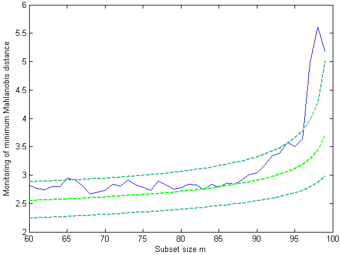

| Flexible Statistics Data Analysis Toolbox™ |
|
| Provide feedback on FSDA toolbox |
Forward search in multivariate context (FSM) with exploratory data analysis (eda) purposes.
[out] = FSMeda(Y,bsb)
[out] = FSMeda(Y,bsb,param1,val1,param2,val2,...)
[out] = FSMeda(Y,bsb) enables to monitor the evolution of distances, parameters estimates and inferences as the subset size increases. In other words, this function stores the required quantities to present the results as “forward plots” which show the evolution of the quantities of interest as a function of subset size. Therefore, unlike other robust approaches, the forward search is a dynamic process that produces a sequence of estimates and related plots.
Y is a matrix of dimension nxp containing the n observations in the rows and the v variables in the columns. bsb is a vector containing the list of the units forming the initial subset. If bsb=0 (default) then the procedure starts with v units randomly chosen else if bsb is not 0 the search will start with m0=length(bsb).
[out] = FSMeda(Y,bsb) returns the following information
MAL − n-by-(n-init+1) matrix
containing the monitoring of Mahalanobis distance
1st row =
distance for first unit
......
nth row =
distance for nth unit.
BB − n-by-(n-init+1) matrix containing the information about the units belonging
to the subset at each step of the forward search.
1st col = indexes of the units forming subset in the initial step
...
last column = units forming subset in the final step (all units)
mmd −n-init-by-3 matrix which contains the monitoring of minimum
Mahalanobis distance or (m+1)ordered
MD at each step of
the forward search.
1st col = fwd search index (from init to n-1)
2nd col = minimum Mahalanobis distance
3rd col
= (m+1)-ordered MD
msr − n-init+1-by-3 = matrix which contains the monitoring of
maximum Mahalanobis distance or m-th
ordered MD
1st col = fwd search index (from init to n)
2nd col = maximum Mahalanobis distance
3rd col = (m)-ordered Mahalanobis distance
gap − n-init+1
x 3 = matrix which contains the monitoring of the gap (difference
between minimum MD outside subset and maximum
inside)
1st col = fwd search index (from init to n)
2nd col = min
MD - max MD
3rd col = (m+1)th ordered MD - mth ordered distance
mea − (n-init+1) x (v+1) matrix containing the monitoring of estimated of the means for each variable in each step of the forward search
S2cov − (n-init+1) x
(v*(v+1)/2+1) matrix containing the monitoring of the elements of the
covariance matrix in each step of the forward
search
1st col = fwd search index (from init to n)
2nd col =
monitoring of S(1,1)
....
3rd col = monitoring of S(v,v)
detS − (n-init+1) x (2) matrix containing the monitoring of the determinant of the covariance matrix in each step of the forward search
Un − n-by-11 matrix which contains the unit(s) included
in the subset at each step of the fwd search.
REMARK: in every step
the new subset is compared with the old subset. Un contains the unit(s)
present in the new subset but not in the old one.
Un(1,2) for example
contains the unit included in step init+1.
Un(end,2) contains the units
included in the final step of the search.
Y − Original data input matrix
[out] = FSMeda(Y,bsb,param1,val1,param2,val2,...) specifies one or more of the name/value pairs described in the following table.
| Parameter | Value |
|---|---|
| 'init' |
scalar, which specifies the point where to initialize the search and start monitoring required diagnostics. Notice that if bsb is supplied init>=length(bsb). If init is not specified it will be set equal to floor(n*0.6). |
| 'plots' |
scalar. If plots=1, a plot of the monitoring of minMD among the units not belonging to the subset is produced on the screen with 1, 50 and 99 % confidence bands, else (default) all plots are suppressed. |
| 'msg' |
scalar which controls whether to display or not messages about
great interchange on the screen. |
| 'scaled' |
scalar. If scaled=1 scaled Mahalanobis distances are monitored during the search |
n=100; v=3; m0=3; Y=randn(n,v); % Contaminated data Ycont=Y; Ycont(1:5,:)=Ycont(1:5,:)+3; [fre]=unibiv(Y); %create an initial subset with the 3 observations with the lowest Mahalanobis Distance fre=sortrows(fre,4); bs=fre(1:m0,1); [out]=FSMeda(Ycont,bs,'plots',1);
| Provide feedback on FSDA toolbox |
|
|
fsmbonfbound.html | fsmenvmmd.html |
|